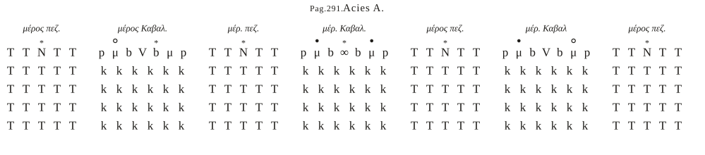
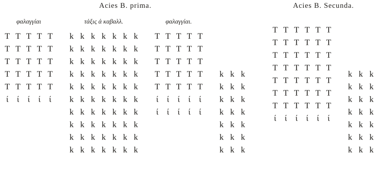
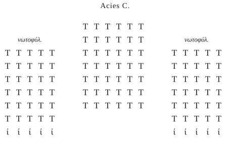
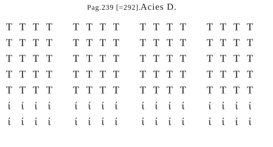
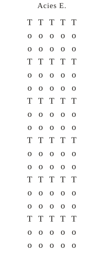
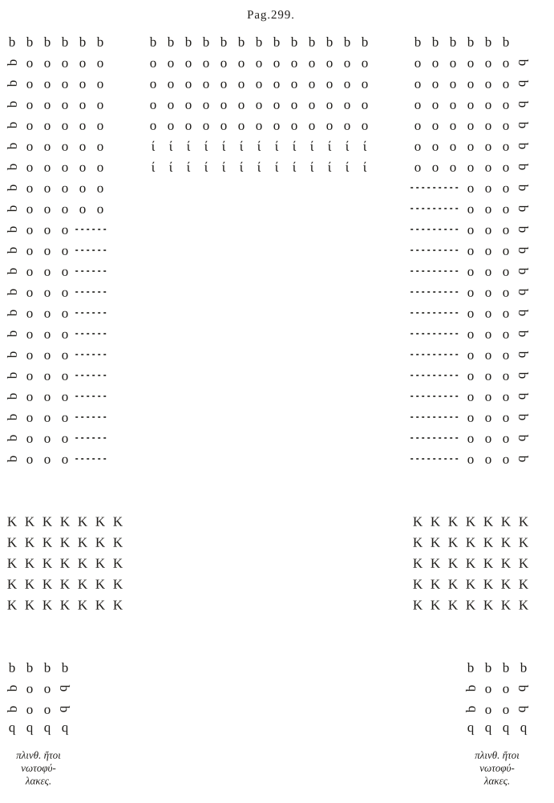
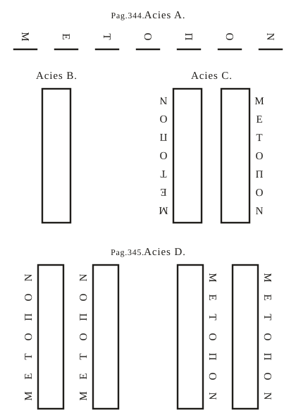

歩兵と混成戦列、陣営、狩り 原典にこの巻の題はありません。シェファーは「戦列のさまざまな形について」のような題があったはずだと考えています（注 p.496）。
この巻を3行で
- 第1〜11巻は騎兵の書でした。第12巻は歩兵と、騎兵と歩兵を組み合わせた戦列を扱います。
- 「なおざりにされ、すっかり忘れられた」歩兵の制度を立て直すため、衣服・武器・編成から、ラテン語の号令、行軍・渡河・陣営の作り方までを、指揮官向けの手引きとしてまとめています。
- 終わりに、別の著者ウルビキオスの「動く砦」という発明と、訓練としての巻き狩りが置かれています。
このサイトでは、原典から読んだことと、原典にない一般的な知識とを分けて書きます。原典にない補足には 補足、筆者の読み方の推測には 推測、読みに自信がない箇所には 不確か の印を付けます。
この巻のつくり
第12巻は、章番号の並びが変わっています。シェファー版の本文は、第2章から始まり、第2〜7章のあとに第1章が来て、そのあと第8章、そして第10章で終わります。第9章という番号はありません。
シェファーは注（p.496）で、自分の写本では章がひどく混乱していて、見出しも正しい場所になかったと書いています。そこで彼は、巻頭の総目次（全12巻の章の一覧）の順に見出しを並べ直し、それぞれの見出しが指す内容をその下に置きました。総目次の1番目が本文の第1章にあたり、番号と内容の対応は総目次と一致しています。
| 版面の順 | 章 | 内容 | 原典のページ |
|---|---|---|---|
| 1 | 第2章 | 混成戦列の記号の凡例 | p.290 |
| 2 | 第3〜7章 | 5つの戦列の図（図 A〜E）の見出しと短い説明 | p.291–292 |
| 3 | 第1章 | 混成戦列（後ろへ曲がった戦列）の組み方と用途 | p.292–299 |
| 4 | 第8章 | 歩兵の戦列（24の節に分かれた長い章） | p.299–363 |
| 5 | （番号なし） | 陣営の図の説明。総目次の9番目にあたる | p.363–364 |
| 6 | （番号なし） | ウルビキオスの発明「動く砦」。総目次にない | p.364–370 |
| 7 | 第10章 | 害もけがもなく野獣を狩る方法 | p.370–382 |
章ごとの解説
版面の順に解説します。
第2章混成戦列の記号の凡例
原典 p.290
この巻の図で使う記号の説明です。原典の図は、活字を並べて兵や指揮官の位置を示しています。記号の意味は次のとおりです。
| 記号 | 意味 |
|---|---|
| ∞（上に ＊） | 全軍のストラテゴス（総司令官） |
| Φ | ヒュポストラテゴス（副司令官） |
| μ（上に °） | 騎兵のモイラルケス |
| ρ | クルソレスの旗 |
| I | 軽装兵（弓兵か投げ槍兵） |
| K | 騎兵 |
| V | メラルケス |
| N（上に ＊） | 歩兵のメラルケス |
| δ | デフェンソレスの旗 |
| T | 盾を持つ歩兵 |
不確か巻末の図 A には、この凡例にない b という記号も使われています。何を指すかは決められません。
第3〜7章5つの戦列（図 A〜E）
原典 p.291–292。図は巻末の p.291 と「p.239」（p.292 の誤植）の図
この5つの章は、それぞれ図の見出しと、どんなときに使う戦列かを述べた1〜2文だけでできています。図は本文の中にはなく、巻末にまとめて刷られています。
第3章 混成戦列（図 A）
歩兵の部分と騎兵の部分を、横に交互に並べた戦列です。歩兵のかたまり4つと騎兵のかたまり3つが並び、真ん中の騎兵のかたまりにストラテゴスがいます。シェファーは、第1章の戦列と違って「曲がって」いない、ただの混成だと説明しています（注 p.500）。

横にスクロールできます
第4章 騎兵の第一の戦列・第二の戦列（図 B）
敵が騎兵で、こちらの騎兵が歩兵と同じかそれより少ないときは、第一の戦列を使います。こちらの騎兵が歩兵より多く、敵とほぼ同じ数なら、第二の戦列を使います。第二の戦列では騎兵の戦列を2つ作って真ん中に歩兵を置き、戦列どうしをおよそ矢の届く距離1つ分離します。

横にスクロールできます
第5章 もう一つの戦列（図 C）
敵が歩兵で、こちらの歩兵が騎兵より多いときに向く戦列です。図では、中央の歩兵の両側に「背後防護」（νωτοφύλακες）と書かれたかたまりがあります。
第6章 横の戦列（図 D）
むき出しで開けた場所に向く戦列です。正面の長さが深さよりずっと大きい戦列を「横の戦列」（πλαγία）と言います（注 p.500–501）。
第7章 縦の戦列（図 E）
狭く通りにくい場所を通るときに必要な戦列です。2つか4つの密集隊に分けることもあり、どれも場所に合わせて「縦」に組みます。



第1章混成戦列（後ろへ曲がった戦列）
原典 p.292–299。図は巻末の p.299 の図（このページの図解1）
この巻の中心になる戦列です。章の見出しは、混成戦列（σύμμικτος τάξις）を「後ろへ曲がった戦列」（ἐπικάμπιος ὀπισθία）とも呼んでいます。シェファーの注によれば、正面にはごく小さな部分しか出ず、大部分が後ろへ伸びる、ギリシア文字 Π の形の戦列です（注 p.497）。
騎兵と歩兵の割合と深さ
- 騎兵が歩兵より多ければ、騎兵の列は8騎か10騎まで深く、歩兵の列は4〜5人まで薄くします。歩兵が多ければその逆です。
- 釣り合いのよい割合は騎兵3分の1、歩兵3分の2です。ほどほどの軍なら、騎兵が4分の1でもかまいません。
- 著者は自分の考えとして、強い外国の民族と初めて戦うときは、盾兵の深さ8、軽装兵2、騎兵8か10がよいと言います。敵がしきりに挑んでくるだけなら、盾兵4・軽装兵1で足ります。後ろに騎兵がいるので、歩兵が内側から崩れにくいからです。
- 側面には側面防護を1つか2つ置き、背後には軽装兵と盾兵で作った四角い「れんが」（πλινθίον）を置きます。500人ほどのかたまりです。
騎兵が歩兵の列の間を出入りする
この戦列のいちばんの特徴は、騎兵が歩兵の列のすき間を通って前に出たり、後ろに戻ったりすることです。
- 歩兵が敵を押し返したら、合図1つで歩兵の列がすき間をあけ、騎兵がそこを通って整然と前へ出ます。
- 騎兵は列の前半分だけが逃げる敵を追います。追うのは矢の届く距離の3つ分、多くても5つ分までで、それより先へは行きません。伏兵がいるかもしれないからです。後ろ半分は隊形を組んでついていき、先に出た者が押し返されたら受け止めます。
- 騎兵が押し返されて戻るときは、歩兵の前を通らず、歩兵の戦列の後ろを回って第二線に入ります。前を通ると味方を乱すからです。
- 戦いの前には、隊形を敵に見せないよう、騎兵を薄く並べて歩兵の前に置いておきます。敵が矢の届く距離の4つか5つ分まで近づいたら、騎兵は歩兵の列の中を通って後ろへ下がり、歩兵が前に立ちます。近づいた敵は、急に現れた歩兵に押し返されます。
盾の壁（フールコン）
敵が近づいて歩兵の戦列を破ろうとするときは、各列の1〜3番目の兵がフールコンを組みます。盾を合わせ、槍を盾の外へまっすぐ突き出して地面に突っ張り、肩で押し合って外からの圧力に耐えます。3番目と4番目の兵は、近づく敵を突いたり、槍を投げてから剣を抜いたりします。シェファーは、φοῦλκον はゲルマン系の言葉で「密集した群れ」を意味する語から来たと考えています（注 p.498）。
背後に回られたとき
敵が騎兵の背後に回ろうとしたら（たいていそうしてきます）、歩兵は二重密集隊に分かれ、1列おきに騎兵の間を通って背後へ出ます。こうして騎兵は歩兵に囲まれた真ん中に入ります。シェファーは、列の後ろ半分を出すのではなく1列おきに出すのは、出た列にも残った列にも、先頭と最後尾の兵がそろったままになるからだと説明しています（注 p.498）。
この戦列は、絶えず訓練しておく必要があります。兵と馬が慣れて、どのくらいの幅のすき間なら騎兵が乱れずに通れるかを知っておくためです。
不確か章の終わり（p.299）の、騎兵が包囲されたときに盾を受け取って徒歩で戦うという部分は、文がうまくつながらず、読みに自信がありません。
第8章歩兵の戦列
原典 p.299–363。24の節に分かれる
著者はまず、歩兵の戦列は「時がたってなおざりにされ、すっかり忘れられた」と言い、訓練だけでなく武装や衣服などの古い制度にも気を配って、指揮官たちに書いて渡す、と述べます。美しい言い回しより、事柄と簡潔さを重んじた、とも言っています。章の初めには、この章だけのための24項目の目次があります。
シェファーは、歩兵がなおざりにされたのは、騎兵だけで強く、足を止めて戦わない敵（ペルシア人、スキタイ人、フン人、トルコ人など）には歩兵が役に立たないと考えられたからだ、と注で説明しています（注 p.501）。
第1〜7節 装備と準備
- 第1節 衣服：短い上着は膝まで。靴はゴート風で、厚い底、先がとがっていないもの、留め具は2つまで、小さな釘で底を固めます。長靴や脚絆は行軍に向かず重いので要りません。ブルガリア風の外套は着ません。髪は短くします。推測シェファーは、ここの上着（ἀρμελαύσιον）を「袖のない服」と解しています（注 p.502）。
- 第2節 盾兵の個人訓練：盾と棒で1対1の模擬戦をし、投げ槍（βηρύττα）とマルツォバルブロンを遠くへ投げる練習をします。
- 第3節 軽装兵の訓練：長い槍を的にして、ローマ式とペルシア式の両方で速く射る練習、盾を持ったまま射る練習、投げ槍、投石、跳躍と走りです。ローマ式とペルシア式の違いは本文に説明がありません。
- 第4節 盾兵の武器：アリトモス（部隊）ごとにそろえた色の盾、ヘルリ人の剣、槍、房と小旗の付いた兜、投石器、マルツォバルブロン。列の選り抜きの兵、少なくとも列の最初の2人には鎧。列の先頭と最後尾の兵には鉄か木のすね当て。シェファーは、木のすね当てはほかの誰も記していない珍しいものだと言います（注 p.511）。
- 第5節 軽装兵の武器：弓と、矢が30〜40本入る大きな矢筒、小さい盾。木の「管」（σωληνάριον）と小さい矢。弓に慣れない者のためのスラヴ風の投げ槍。
補足この「管」は、短い矢を遠くへ飛ばすための矢の導き具と考えられています。短い矢は敵に拾われても射返されません。 - 第6節 用意しておくもの：軽い荷車を10人組（デカルキア）ごとに1台。手回しの石臼、斧、鋸、つるはし、シャベル、かご、山羊毛の布、鎌、鉄菱（紐につないで回収しやすく）を積みます。ほかに、回転する弩を積んだ荷車と、弩兵・大工・鍛冶。荷鞍の馬を各列に1頭用意し、歩兵が荷車と別れて先に進むときは、8日か10日分の食糧を運ばせます。
- 第7節 役目のために分ける者：伝令のマンダトールは、眠らず、賢く、声が大きく、ラテン語とペルシア語を話せ、できればギリシア語も話せる者を選びます。ほかに、道を調べて導くカンピドゥクトール、旗手、ラッパ手、武具係、研ぎ師、弓矢作り、落とし物を集めて持ち主に返す係、荷車の列の長。牛にも部隊ごとの印をつけます。
第8〜13節 編成と並べ方
- 第8節 軍の分け方：昔は盾兵のタグマを16列・256人で作り、全体を64タグマ・1024列・16384人、軽装兵8000、騎兵1万としていました。今は兵の数がそろわないので、いる人数に合わせてタグマを作りますが、列は必ず16人にします。戦列は4つの部分（右、左、中央の左右）に分け、歩兵が2万4千人より少なければ3つにします。
不確か版面は4つの部分のうち2つしか名を挙げていません。シェファーはレオ6世『タクティカ』から残りを補っています（注 p.518）。
補足256人・16384人という数は、古代ギリシアの戦術書（アイリアノスやアッリアノス）の理想の密集隊と同じ数で、実際のローマ軍の数ではなく、戦術書の伝統の数と考えられます。 - 第9節 タグマの選抜と配置：まず弓を射られる者、すばやく若い者を軽装兵にします（軍が2万4千人を超えれば半分、少なければ3分の1）。残りを18人の列に分け、劣る2人は荷車などの用事に回し、16人を戦列に立てます。良い兵を列の前の4人と後ろの4人に、劣る兵を真ん中に置きます。16人には交互にプリモイ（第一）とセクンドイ（第二）という呼び名を付け、1番目の兵がロカゴス、2番目がデカルコスです。できれば背の高い者を前に置いて、戦列を見栄えよくします。昔の人が深さを16としたのは、必要なら1人まで薄くでき、また深くもできるからだ、と著者は言います。
- 第10節 誓いについての命令：軍を分けたら1日で全軍を集め、法の命令を「騎兵についての書で述べたとおり」に告げます。推測第1巻の罰則と命令の章を指すと考えられます。
- 第11節 盾兵のタグマの並べ方：指揮官の横に旗手、その後ろに外套を運ぶ者、その後ろにラッパ手。両側に列が並び、最初は広めの間隔で、深さ16、軽装兵は後ろ。行軍中は槍の穂先を上に向けます。ラッパは各メロスでメラルケスのものだけを鳴らします。たくさん鳴らすと騒がしくなって号令が聞こえなくなるからです。
- 第12節 軽装兵の並べ方：弓兵は盾兵16人に4人の割合で各列の後ろに置くのが基本です。列の中に交互に入れることも、戦列の端や騎兵の外側に置くこともあります。投石兵は全員、戦列の端に置きます。
- 第13節 騎兵の並べ方：騎兵は歩兵の戦列の端に置き、1万2千騎より多ければ深さ10、少なければ5にします。騎兵は敵に突撃せず、歩兵から遠く離れないこと。押されたら戦列の後ろへ逃げ、それでも持ちこたえられなければ馬を降りて徒歩で身を守ります。
第14〜17節 訓練と号令
この部分には、ラテン語の号令がそのまま書かれています。ギリシア語の本文の中に、ラテン語をギリシア文字で写したり、ラテン文字のまま刷ったりした号令が出てきます。6世紀末の東ローマ軍で、日常の言葉はギリシア語になっていても、軍の号令はまだラテン語だったことを示す箇所です。
- 第14節 第一の訓練：動く・止まる、列を薄くする・深くする、間隔をそろえて歩く、密に締まる、盾の壁で歩く、見せかけにぶつかる（ときに棒で、ときに抜き身の剣で）。
- 第15節 第二の訓練：二重密集隊に分かれる、右・左に傾く、縦列になって進む、前後両面に向く、右・左へ移る、広げる、深くする、後ろへ向き直る。
- 第16節 それぞれの動きの理由：号令と、それをいつ使うかを説明します（下の表）。武器の音や土ぼこり、霧で声が聞こえないことがあるので、声と合図の両方に慣れさせます。動けの合図はブキナ（角笛）や鞭、止まれの合図はトゥーバ（ラッパ）です。
- 第17節 全軍の訓練：本当の戦争のように全軍を並べ、仮の敵に、ときには隊形を組んで、ときには土ぼこりと叫び声の中で乱れて、前から横から後ろから攻めさせます。戦列の各部分は100か200フィート離します。戦列の中央を昔の人は「口」「へそ」と呼びました。初めは深さ4で並べ、必要に応じて8や16に締めます。深さは16を超えず、4より少なくしません。ささやく者がいたら、最後尾の兵が槍の石突きで突きます。戦いの時に全戦列を1つの合図で動かす必要はなく、各部分は攻められ方に応じて自分で動きます。
| 号令 | 意味 | 使うとき |
|---|---|---|
| SILENTIO, MANDATA CAPTATE | 静かに、命令を聞け | 動き出す前に。続けて「騒ぐな」「隊列を守れ」「旗に従え」「誰も旗を離れて敵を追うな」 |
| AD OCTO ／ EXI | 8人に／出よ | 深さ16の列から1人おきに横へ出て、深さ8にする。もう一度 EXI で深さ4に |
| DIRIGE FRONTEM | 正面をそろえよ | 前に出すぎた者がいるとき |
| JUNGE | 密にせよ | 敵から矢の届く距離の2〜3つ分に来て、ぶつかる前に。盾の突起が触れ合うまで締まる |
| AD FULCUM | 盾の壁を組め | 敵が射撃を始めたとき。前の者は腹からすねまで、後ろの者は盾を前の者の盾に載せて胸と顔を覆う |
| PARATI — ADJUTA — DEUS | 備えよ — 助けたまえ — 神よ | 敵から矢の届く距離1つ分に来て戦いに入るとき。1人が叫び、別の者が続け、全員が声をそろえて答える |
| MEDI PARTITI AD DIFALANGIAM | 真ん中で分かれ、二重密集隊へ | 敵が後ろからも来るとき。後ろの8人が向き直る |
| PRIMI STATE, SECUNDI EXITE | プリモイは立て、セクンドイは出よ | 深さ8か4のときの二重密集隊。セクンドイが30歩まで離れて向き直る |
| AD CONTO CLINA ／ AD SCUTUM CLINA | 槍の側（右）へ／盾の側（左）へ傾け | 戦列を横へ引くとき。続けて MOVE（進め）、VERTE（元へ） |
| UNDIQUE SERVATE | 四方を守れ | 前と後ろから急に攻められ、分かれる暇がないとき |
| DEPONE DEXTRA ／ SINISTRA | 右へ／左へ移れ | 戦列全体を横へ移すとき |
| LARGIA AD AMBAS PARTES | 両側へ広がれ | 密にしていた戦列を広げるとき |
| INTRA | 入れ | 深さ4を8に、8を16に倍にするとき |
| ACIAM IN ACIA | 列を列の中へ | 深さ32にするとき（著者は役に立たないと言う） |
| MUTA LOCUM ／ TRANSFORMA | 場所を変えよ／その場で向き直れ | 敵が後ろから来て、正面を後ろへ移すとき |
不確か版面の綴りは乱れていて、シェファーが注で何か所も直しています。たとえば「誰も旗を離れるな」は版面のラテン語が NEMO DESIT A BANDO、注の読みが NEMO DIMITTAT BANDUM、「プリモイは立て」は版面が PRIMI STATIS、「四方を守れ」は UNDIQUE SERVATIS です。上の表は注の読みに従いました。
第3巻にも騎兵の号令（MOVE、STA、JUNGE、TORNA など）があり、歩兵と騎兵で共通する号令もあります。
不確か第17節の「長い時間立たせない。装備が重いから」の箇所は、ギリシア語の版面では「軽い装備」となっています。シェファーは「重い」の誤植として直しており（注 p.529）、ラテン語訳も「重い装備」なので、このサイトでは「重い」と読みます。
第18〜19節 荷車と行軍
- 第18節 荷車の並べ方：輜重（荷車の列）は歩兵の戦列の後ろ、矢の届く距離1つ分ほどに置きます。荷車の列の幅は戦列と同じにし、各荷車の後ろを山羊毛の布で覆って、御者が城壁の上からのように戦えるようにします。弩を積んだ荷車は特に端に。荷車と戦列の間は、騎兵や軽装兵が走り抜けられるよう広く空けておきます。背後から押されたら鉄菱を撒き、撒いた場所は自分たちも通らないようにします。不確か「1つ分」か「1つ分より多く」か、ギリシア語の読みがはっきりしません。
- 第19節 敵が近いときの行軍：前後に騎兵の見張りを出し、陣営は近い間隔で作って、歩兵が長い距離を歩いて疲れないようにします。重装兵は武器を荷車に置かず自分で持ちます。敵の騎兵が多いなら、戦いの2〜3日前に戦場を占めて、そこに野営します。
第20節 森や狭い場所の行軍
森や狭い道で敵、特にスラヴ人やアンテス人と戦うときは、身軽にします。騎兵や荷車を多く連れず、鎧や兜も使いません。盾兵は大きめの盾と短い槍、軽装兵は小さな盾と弓、投げ槍を持ち、全員が予備の斧を持ちます。
- 戦列は横に広げず、2つか4つの部分に分けて縦に進みます（このページの図解3）。各部分は石を投げて届くくらいの間隔をあけます。
- 軽装兵の一部が少数の騎兵と1マイル先を進み、隠れた敵や、背後から鋸で切って形だけ立たせてある木がないかを調べます。そういう木は手で押せばすぐ倒れて、狭い道をふさぎます。
- 軽装兵は一列に並べず、投げ槍兵3〜4人と弓兵1人の小さな群れ（δροῦγγοι）にして散らばって進み、敵より先に高い場所を取ります。
- 行軍中に敵が現れて叫び声が上がっても、全員がそちらへ走ってはいけません。盾兵は隊形を守り、そのメロスの軽装兵だけが助けに行きます。
- 深い森では、弓兵や投石兵より、手で投げ槍を投げる兵が役に立ちます。
- トゥーバの音で止まり、ブキナの音で動く、と全員に教えておきます。
不確か盾兵の盾は、ギリシア語では「大きめの盾」、ラテン語訳では「小さい盾」です。シェファーの注（p.530）もギリシア語を支持するので、このサイトではギリシア語に従います。
第21節 敵が向こう岸にいるときの渡河
快速の櫂船ドロモンや荷船、浮き橋の材料と綱を用意します。船も陸の軍と同じように指揮官ごとに組織し、帆柱に掲げた印でどの指揮官の船かがわかるようにします。ドロモンには山羊毛の布で覆った小型の弩を据え、弓兵を乗せて、船の上にやぐらを作ります。川の上で戦うときは、ドロモンを川幅いっぱいに横に並べ、残りを矢の届く距離1つ分ほど後ろに第二線、第三線として並べます。向こう岸を取るときは、弩を積んだ船で敵を追い払いながら浮き橋を少しずつ延ばし、渡った先に木か日干し煉瓦か空積みの石の塔を建てて橋を守ります。
第22節 陣営の作り方
- 荷車で陣営を囲み、外側に幅5〜6フィート、深さ7〜8フィートの壕を掘ります。その外に鉄菱と、とがった杭を立てた小さな穴を作ります（味方にも知らせておきます）。
- 主な門は4つ、ほかに小さな通用門をいくつか作り、それぞれに指揮官を置きます。
- 荷車のすぐ内側に軽装兵の天幕を張り、そこから約300〜400フィートあけて残りの天幕を張ります。敵の矢が空き地に落ちて、中の兵に当たらないようにするためです。不確かラテン語訳は「30〜40フィート」です。ラテン語訳が300・400を30・40とする食い違いは、第1・4・6巻にもあります。
- 陣営の真ん中に、幅40〜50フィートの十字の大通りを通します。
- 夕方、トゥーバが3回鳴ったら作業をやめて夕食をとり、「トリサギオン」の讃歌を歌います。その後は沈黙し、大声で仲間の名を呼びません。沈黙していたおかげで、陣営に紛れ込んだ敵の偵察兵が見つかったこともよくある、と著者は言います。踊りや手拍子も禁じます。
- 陣営を移す日は、夜明けにブキナを3回鳴らして出発します。
- 陣営の形は、昔の人がいろいろ伝えていますが、「この文を書く者」は長方形をよしとします。
- 病気のない清い場所を選び、用便は陣営の外で済ませます。馬には川の下流で水を飲ませます。敵が登りやすい丘のそばには天幕を張りません。荷車の牛には足かせをかけ、矢に驚いて暴れても戦列を乱さないようにします。
第23節 戦いの日に歩兵の将が気を配ること
- 敵の騎兵が多く、こちらの輜重がついてきていないなら、平らに開けた場所で戦いません。沼や岩場、森などの通りにくい場所を選びます。
- 歩兵の戦いに騎兵は多く入れず、戦列の端に鎧を着た騎兵を3000〜4000騎まで置きます。
- 敵が騎兵で、こちらが騎兵が多く歩兵が少ないなら、騎兵を前に3つのメロスで並べ、歩兵はその1〜2マイル後ろをついていきます。
- 戦いの日は、歩兵を陣営から2マイルより先へ連れ出しません。敵が来るまでは座らせて休ませ、夏なら兜を脱がせて頭に風を通します。ワインは与えず、水を荷車で運びます。
第24節 訓練の短いまとめ
護民官（歩兵のタグマの指揮官）が覚えておくべき号令を、短く並べ直した節です。ここではギリシア語の欄でも号令がラテン文字で刷られています。護民官にはこの章を書いて渡し、メラルケスにはさらに「なぜその隊形を行うのか」（第16節）も渡す、と著者は結んでいます。
（第9章にあたる部分）陣営の図の説明
原典 p.363–364。番号はないが、総目次の9番目「陣営（防柵か壕）の図」にあたる
図そのものはなく、説明だけが残っています。荷車の列の外に引いた線が壕、λ の記号が鉄菱、真ん中の記号が天幕で、十字の大通りは幅50フィート、荷車の内側の空き地は幅200フィートとあります。シェファーは、この図は自分の写本にもなく、第22節の説明から誰でも描けると書いています（注 p.534）。
不確か空き地の幅（200フィート）と大通りの幅（50フィート）は、第22節の「300〜400フィート」「40〜50フィート」と合いません。
（番号なし）ウルビキオスの発明「動く砦」
原典 p.364–370
題は「ウルビキオスの発明」（Οὐρβικίου ἐπιτήδευμα）です。総目次にはなく、シェファーはこの題そのものが、別の著者ウルビキオスの文書をこの本に移したものであることを示していると言います（注 p.534）。
- 著者は、皇帝に公益を知らせるために、昔の人が述べたものではない自分で考え出した戦列を提案すると言います。特に騎兵と戦う歩兵のためのもので、名前は「動く砦」（κάστρον κινούμενον）です。
- 行軍する兵の四角い隊形の側面に、釘を打った杭を運ぶ動物をつけます。10人組ごとに杭を3本持ち、1頭の動物が10組分を運びます。
- 敵が来たら、若い兵が飛び出して、敵の矢が届く幅の分だけ、隊形の周りを杭で城壁のように囲みます。
- 蛮族の最初の突撃（ἔμπτωσις）が来ると、先頭の騎兵は杭に倒れ、後ろから来る味方に踏みつけられます。荷車の上の弩は四方から射ます。敵が馬を降りて杭を抜こうとすれば、中の兵が走り出て投げ槍で倒します。
- 杭を打つのは骨折りだと思う者には、天幕を運んで張る手間や陣営を作る手間と比べよ、と答えます。そして、アルキメデスの知恵が「勝利に輝く我らの専制君主、アナスタシオス帝のもとで完成して戻ってきた」と述べます。
不確か弩が「敵の3倍」射るという箇所を、リガルティウス（シェファー以前の刊行者）は「3倍遠く」、シェファーは「前と両横の3方向から射るので3倍の量」と解しています（注 p.535）。図は、シェファーの写本にもありませんでした。
第10章害もけがもなく野獣を狩る方法
原典 p.370–382
狩りは、兵の心と馬を鍛えるだけでなく、戦いの隊形の経験にもなる、と著者は言います。そのため、狩りも決まった隊形と規律で行います。
- 規律：ストラテゴスが許した者のほかは、獣に向かって馬を走らせてはいけません。獣に近い者が、自分の場所にとどまったまま射ます。射止めた獲物は自分のものにせず、指揮官に届け出ます。不注意で獣を逃がした者は罰を受けます。獲物は、価値があればタグマに比例して分け、なければくじで分けます。
- 広さ：開けた場所では、隊形を7〜8マイルまで広げれば十分で、騎兵は1マイルあたり800〜1000騎の割合で並べます。
- 手順：前日に偵察兵で狩り場を調べます。当日は夜明けの2時間前に出て、狩り場から3〜4マイル離れた見えにくい場所で隊形を組みます。3つのメロスで横一列に進み、獣が見えたら両翼を先に出して三日月形になり、両翼の先がつながって獣を囲みます。風が強ければ、風上の翼は遠く回ります（匂いで気づかれないように）。
- 締め方：囲んだら、右の翼は内側を、左の翼は外側を通って、らせん状に少しずつ輪を締め、1〜2マイルまで小さくします。歩兵がいれば、盾を構えて締めた輪に入れます。
- もう一つのやり方：軍を5つの部分に分け、中央の部分が正面に立ち、両側の部分が前へ回り込んで「ἐπικάμπιος（曲がった）隊形」を作り、最後に側面防護の部隊が回り込んで四角形に閉じます。
- スキタイ式：5人か10人の組に分かれて囲む方法もあり、スキタイ人が好みます。しかし一人ひとりの負担が大きく、若い者が獣を追いかけて危なく、無秩序に慣れてしまう、と著者は言います。
この隊形は、陣営を出るときや戻るとき、行軍中に不意に現れた敵に対しても役に立つ、と著者は付け加えています。
不確か5つの部分の割合は、版面では「3分の1、4分の1、10分の1、12分の1」と4つしか挙がっておらず、シェファーも崩れていると言います（注 p.536）。推測3分の1＋4分の1＋4分の1＋12分の1＋12分の1でちょうど全体になるので、そう読むのが自然かもしれません。
シェファーは、このような巻き狩りは今もタタール人のもとでよく行われ、昔のゲルマン人やスウェーデン人も行った、と注に書いています（注 p.537）。
図解
図解1後ろへ曲がった混成戦列
第1章の戦列を、巻末の図（p.299）から描き直したものです。上の列が正面で、中央の歩兵の両側から、歩兵の列が後ろへ長く伸びて、ギリシア文字 Π の形を作ります。騎兵（K）はその内側にいて、歩兵の列の間を通って前後に出入りします。後ろの両隅の小さな四角が「れんが」（背後防護）です。
原典は、前列の兵を示す記号 b を、兵が向く方向に合わせて回転させて組んでいます。上の列はふつうの向き（前を向く）、左翼の外側の列は横倒しで左向き、右翼の外側は右向き、れんがの下の辺は逆さ（後ろ向き）です。描き直しでも同じようにしました。

横にスクロールできます
推測記号 b の意味は凡例にありません。第1章の終わりの凡例で「前列の兵」を示す T は左右対称で向きを示せないため、代わりに b を使ったと考えられます。両翼の後ろ半分の短い線が何を示すかはわかりません。
図解2列の深さを変える号令
歩兵の列は基本の深さが16人です。号令ひとつで、列から1人おきに横へ出て深さを半分にし、戦列の正面を長くします（第8章第16節）。逆に INTRA（入れ）で元の列に戻ります。
横にスクロールできます
深さは16を超えず、4より少なくしない、と著者は言います（第17節）。初めは深さ4で並べて戦列を大きく見せ、敵が近づいてから締めるのがよいとしています。締めるのは広げるより速く安全だからです。
図解3森を抜ける4つの隊形
第8章第20節の終わりに、著者は「この章で述べたことをはっきり理解するため、隊形そのものを描いて下に置いた」と書いています。巻末に残る図は、4つの隊形の輪郭だけです。ΜΕΤΟΠΟΝ（正面）と書かれた側が、兵の向く方向です。

推測C と D では、左右の密集隊がどちらも外側を正面にしています。森の中を進みながら、両側の茂みに向かって身構える形と読めます。
用語
この巻に出てくる主な用語です。くわしくは用語集を見てください。
- ストラテゴス・ヒュポストラテゴス・メラルケス・モイラルケス — 指揮官
- メロス・モイラ・タグマ — 部隊の単位
- ロカゴス・デカルコス・ウーラゴス — 列の先頭・2番目・最後尾の兵
- 盾兵（スクタトイ）・軽装兵（プシロイ） — 歩兵の2つの種類
- クルソレスとデフェンソレス — 騎兵の2つの役割
- フールコン・二重密集隊・れんが（プリンティオン）・後ろへ曲がった戦列 — 隊形
- マンダトール・カンピドゥクトール — 伝令と案内役
- マルツォバルブロン・ソーレーナリオン・鉄菱 — 武器と道具
- ドロモン — 快速の櫂船
コラム
他の巻とのつながり
- 第3巻には騎兵の号令と陣形図があり、この巻の歩兵の号令と比べると、共通する号令（JUNGE など）と、歩兵だけの号令（盾の壁、二重密集隊など）がわかります。
- 第11巻のスラヴ人・アンテス人の章は、森や沼での戦いを述べています。第8章第20節の「森の行軍」は、その対策の歩兵版として読めます。また第11巻で「曲がった背後の戦列の図で示すように並べよ」と言っているのは、この巻の第1章の戦列のことです。
- 第1巻・第5巻は「陣営についての章で示すとおり」と言いますが、その章がどこかははっきりしません。推測この巻の第8章第22節（陣営の作り方）が候補です。
- 第6巻のスキタイ式の戦列の「らせん状の回り込み」を説明するのに、シェファーはこの巻の狩りの章を引いています。ただし右と左の内外は逆になっています。
現代から見た意味
- ラテン語の号令：ギリシア語で書かれた本の中に、ラテン語の号令がそのまま残っています。東ローマ帝国の軍が古代ローマ軍の伝統を受け継いでいたことを、言葉の面から示しています。
- 歩兵の立て直し：騎兵中心の時代に、歩兵の訓練や装備、騎兵との組み合わせ方を細かく定めた手引きです。補足のちの東ローマの軍事書では、歩兵の方陣の中から騎兵が出撃して戻るという戦い方が発達します。この巻の混成戦列はその早い姿と見ることができます。
- 本の成り立ち：アナスタシオス帝の時代のウルビキオスの文書がそのまま入っていることから、『ストラテギコン』は一人の著者が一度に書き下ろしたというより、既存の文書も取り込んでまとめられた本だとわかります。
照合の状況
このページの内容は、シェファー版のラテン語訳を主に読み、数字や用語、解釈が分かれそうな箇所をギリシア語の本文で確かめて書いています。「ギリシア語で確認」は、その章の数字や用語の一部を原寸の画像でギリシア語と照らしたという意味で、全文を照合したわけではありません。
| 章 | 解説 | 図解 | 照合 |
|---|---|---|---|
| 第2章 凡例 | 済 | 表 | 記号をギリシア語で確認 |
| 第3〜7章 図 A〜E | 済 | 巻末の図 5枚 | 見出しのみ |
| 第1章 混成戦列 | 済 | 図解1 | 数字をギリシア語で確認 |
| 第8章 第1〜7節 | 済 | — | 第1・4・5・7節の数字と用語を確認 |
| 第8章 第8〜13節 | 済 | — | 第8・9節の数字を確認 |
| 第8章 第14〜17節 | 済 | 号令の表、図解2 | 第14・17節を確認。号令はシェファーの注に従う |
| 第8章 第18〜19節 | 済 | — | 第18節の距離を確認（読みは不確か） |
| 第8章 第20節 | 済 | 図解3 | 盾の大きさを確認 |
| 第8章 第21節 | 済 | — | ラテン語訳のみ |
| 第8章 第22節 | 済 | 陣営の平面図は未作成 | 間隔の数字を確認 |
| 第8章 第23〜24節 | 済 | — | 第24節の号令を確認 |
| 陣営の図の説明 | 済 | — | 数字を確認 |
| ウルビキオスの発明 | 済 | — | アナスタシオス帝の箇所を確認 |
| 第10章 狩り | 済 | — | 隊形の名前と数字の一部を確認 |